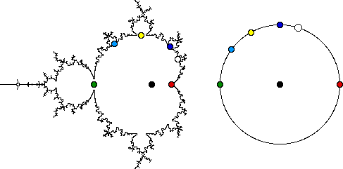
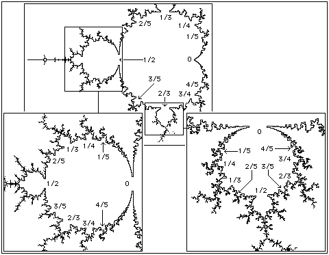

| Recall
a fixed point x* of f(x) is stable if |f '(x*)| < 1. The same is true for complex
functions, except now the absolute value |x| of a real number x is replaced by the modulus
|z| = √(x2 + y2) of the complex number z = x + i⋅y.
|
| For f(z) = z2 + c, the fixed points are the solutions z1 and z2 of
z = f(z) = z2 + c, so |
| z1 = (1/2)⋅(1 + √(1 - 4⋅c)) |
| z2 = (1/2)⋅(1 - √(1 - 4⋅c)) |
|
| Because f '(z) = 2⋅z, the modulus of each fixed point is |
| |f '(z1)| = |1 + √(1 - 4⋅c)| |
| |f '(z2)| = |1 - √(1 - 4⋅c)| |
|
| The first is never less than 1, so only z2 can be stable. For each complex
number c, the function |
| c -> 1 - √(1 - 4⋅c) |
| takes c to a complex number that is the derivative of f(z) = z2 + c at
the fixed point z2. Call 1 - √(1 - 4⋅c) the
multiplier
m(c) of z2. As long as m(c) lies inside the circle of
radius 1, the fixed point z2 is stable. |
| Recall the main cardioid is part of the Mandelbrot set for which z2 is stable, so
c → m(c) is a correspondence between the interior of the main cardioid and the interior of the
unit disc. The internal angle of a point c on the boundary of the
main cardioid is the fraction of the way around the unit circle the point m(c) lies. Here we see |
| red dot | internal angle = | 0 |
| white dot | | 1/5 |
| dark blue dot | | 1/4 |
| yellow dot | | 1/3 |
| light blue dot | | 2/5 |
| green dot | | 1/2 |
|
| The disc attached to the main cardioid at internal angle m/n is an n-cycle disc. The point at
internal angle 0 is the root of the cardioid. The center
of the cardioid is the c with m(c) = 0. The center is represented by the black dots in the picture above. |
|  |
| Similar ideas can be applied to cycles. For example, suppose z1, z2, z3 is a
3-cycle. Then f(z1) = z2,
f(z2) = z3, and
f(z3) = z1. Consequently,
f3(z1) = z1,
f3(z2) = z2, and
f3(z3) = z3. These last are just the observation that
each point of a 3-cycle is a fixed point of f(z). |
| By the chain rule, the derivative of f3(z1) is |
| f3 ' (z1) | = f ' (f2(z1)) ⋅ f ' (f(z1)) ⋅ f ' (z1) |
| | = f ' (z3) ⋅ f ' (z2) ⋅ f ' (z1) |
| | = 2⋅z3⋅2⋅z2⋅2⋅z1 |
| | = m(z1) |
|
| It is easy to see that m(z1) = m(z2) = m(z3). The multiplier again
provides a correspondence between the interior of a 3-cycle component and the interior of the unit disc. Internal
angles and the center are defined in just the same way as for the cardioid. The only change lies in the interpretation
of the cycle corresponding to internal angle m/n. If this is a point on the boundary of a k-cycle component, the disc
attached there has an n*k-cycle. The magnified windows in the picture below show some internal angles for the 2-cycle and
a 3-cycle component. The disc attached to the 3-cycle component at angle 1/5 is a 3⋅5 = 15-cycle disc. |
| Finally, the root of a component is the cusp if the component is a cardioid. For a disc component, the root is
the point at which the disc is attached to a point with a smaller cycle number. (Necessarily, the smaller cycle number
must divide the larger.) |
|  |